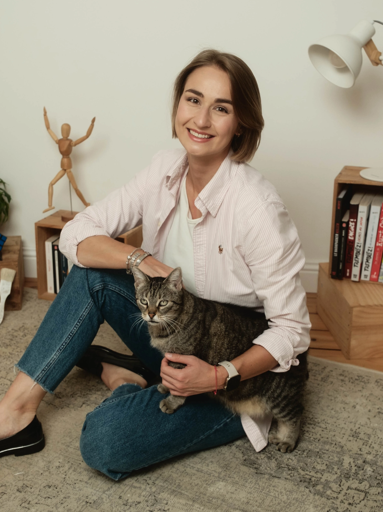
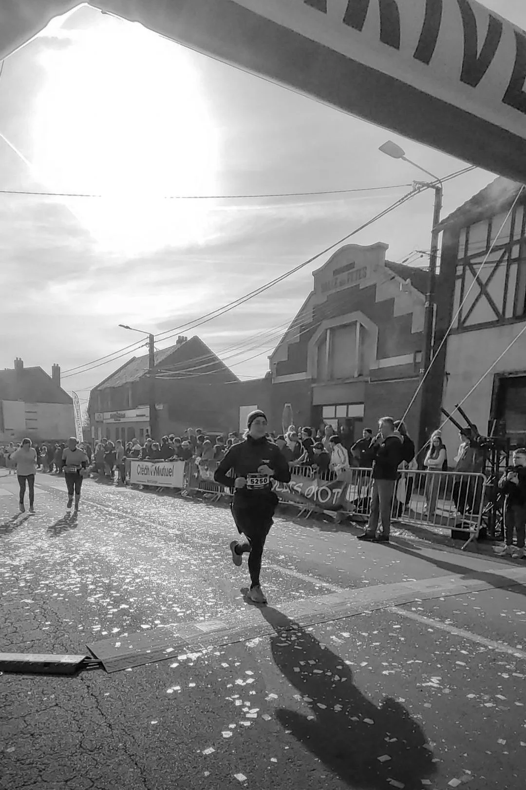
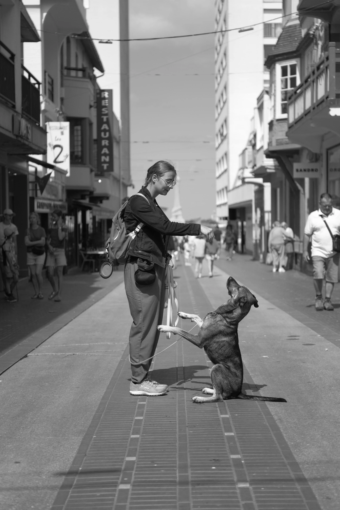

Et si…
Nous faisions connaissance
Enchantée, je suis Pauline Thelliez, Product Designer UX/UI et Développeuse Front-End, basée à Cambrai dans les Hauts-de-France.
Mon parcours
01 — Du marketing au product design
-
De 2019 à 2021
Études
Placer l’utilisateur au centre
Après une licence professionnelle en e-commerce et marketing numérique, j’ai voulu me concentrer sur le cœur du digital : l’utilisateur final. Mon objectif au quotidien est de concevoir des solutions simples, fluides et centrées sur leurs besoins réels.
Pour affiner cette vision, j’ai obtenu un Master en design graphique et d’interaction (Mention Très Bien). À la suite de mes études, l’agence web qui m’accueillait en stage m’a proposé mon premier poste d’UX/UI Designer. Une opportunité idéale que j’ai acceptée pour lancer ma carrière !
-
Depuis 2021
UX/UI designer en agence
Design d’interface et maîtrise technique
Au sein de l’agence, j’ai développé une forte polyvalence sur des projets variés : applications métiers (dashboards, back-office), e-commerce et applications mobiles. Certains de mes projets, réalisés pour de grands groupes, ne peuvent pas être montrés publiquement : je les présente volontiers en entretien.
Pour garantir la faisabilité de mes designs, j’ai approfondi le développement web. Aujourd’hui, je crée des thèmes sur-mesure (WordPress, PrestaShop, full custom PHP) et je conçois des interfaces modernes avec React (Mantine, Material UI, intégration d’APIs). Cette double compétence me permet de faire un vrai pont entre le design et la réalité technique.
Un exemple concret : Boxy, un générateur de box-shadow que j’ai développé en React, Redux Toolkit et Vite -
Et maintenant…
La suite
Cap sur le Product Design
Passionnée par l’apprentissage en continu, je souhaite aujourd’hui canaliser cette polyvalence vers mon cœur de métier : le Product Design.
Mon ambition est de rejoindre une équipe produit stimulante où je pourrai mettre à profit ma double culture Design x Dev, concevoir des outils à forte valeur ajoutée et continuer d’évoluer dans un environnement collaboratif.
Un petit recap’ ?
Téléchargez mon CV (PDF)02 — Mes centres d’intérêt
Au-delà des écrans
En dehors du pro, je suis passionnée par le cinéma, la littérature, les animaux et les voyages. Mais ce qui m’anime le plus, c’est l’éducation canine, le running et le bien-être en général. Ce sont des activités qui me challengent au quotidien et me poussent à toujours aller plus loin : rééduquer mon chien adopté en refuge, préparer ma prochaine course ou simplement chercher à progresser, un objectif après l’autre.

